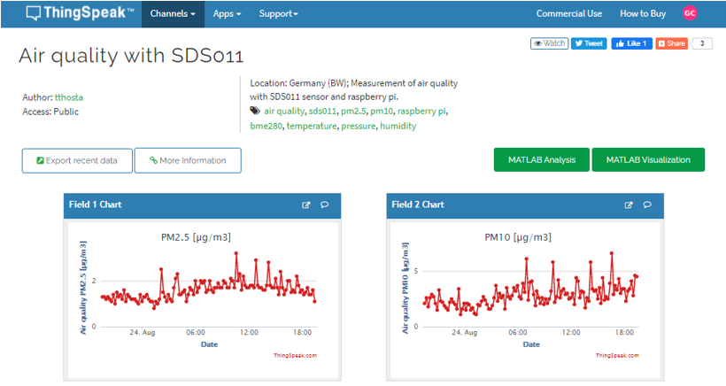
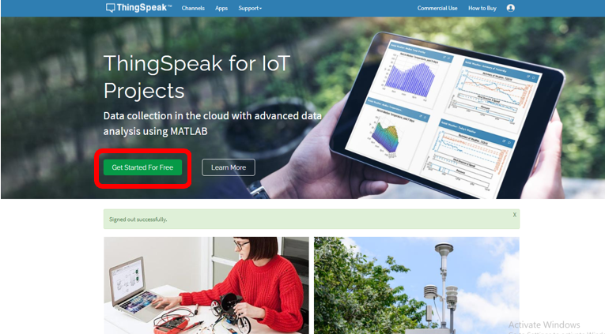
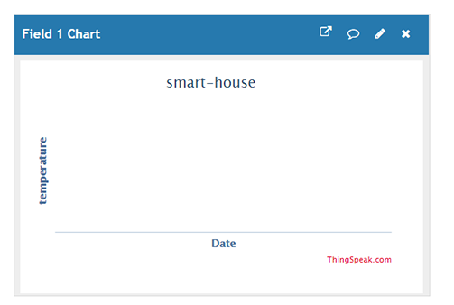
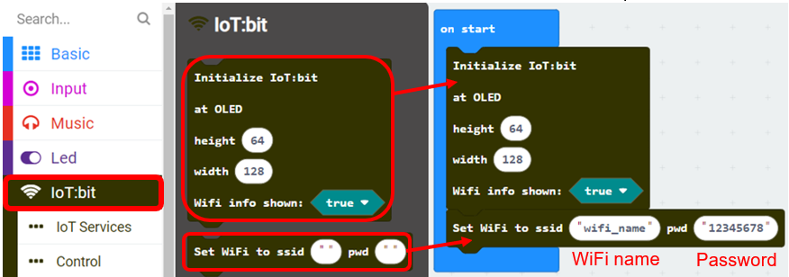
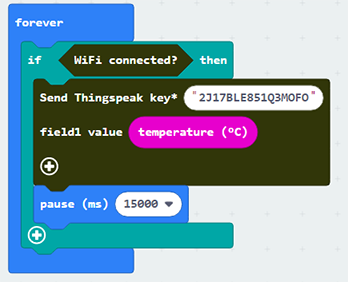
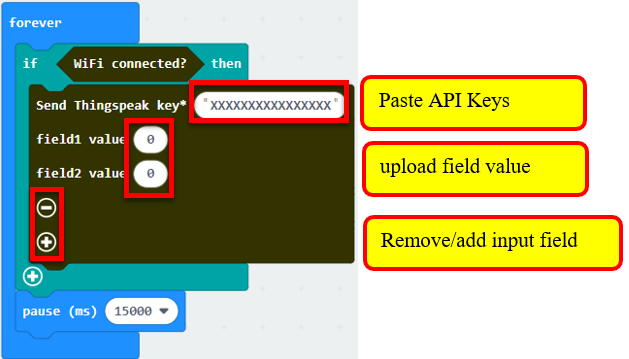
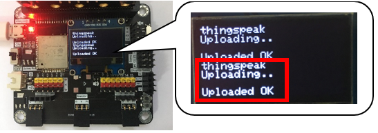
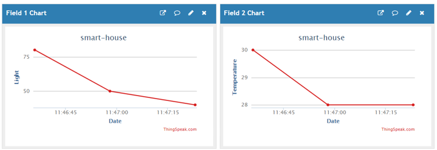

5. Chapter 1: Upload Data to ThingSpeak¶
ThingSpeak is IoT platform for user to gather real-time data; for instance, climate information, location data and other device data. In different channels in ThingSpeak, you can summarize information and visualize data online in charts and analyze useful information. ThingSpeak can integrate IoT:bit (micro:bit) and other software/ hardware platforms. Through IoT:bit, you can upload sensors data to ThingSpeak (e.g. temperature, humidity, light intensity, noise, motion, raindrop, distance and other device information).

5.1. Create channel in ThingSpeak and get the key¶
Step 1
Go to https://thingspeak.com/, register an account and login to the platform

Step 2
Choose Channels -> My Channels -> New Channel

Step 3
Input Channel name, Field1 and Field2 , then click “Save Channel”
Channel name: smart-house
Field 1: Light
Field 2: Temperature

Step 4
You will see two chats for data (field1, field 2)

Step 5
Open your web browser, go to https://thingspeak.com , select your channel > “API Keys” ，copy the API key as follows:

5.2. Programming (Makecode)¶

Step 1
Before you start, you need to initialize IoT:bit and connect micro:bit to the internet.
Select IoT:bit > Initialize IoT:bit and OLED and Set WiFi to ssid…pwd.

Step 2
Snap if statement into forever, set if WiFi is connected.

Step 3
On every 15seconds, if the WiFi is connected, it will send data to ThingSpeak.

Step 4
Open your program and paste the ThingSpeak key. You can also remove/add the input field and change the upload value.

5.3. Result¶
Micro:bit start uploading, “thingspeak uploading… “ is shown.
If data is uploaded successfully, “Uploaded OK” will be shown.

The charts in your channel in ThingSpeak will be updated.
